Chicken Fajitas
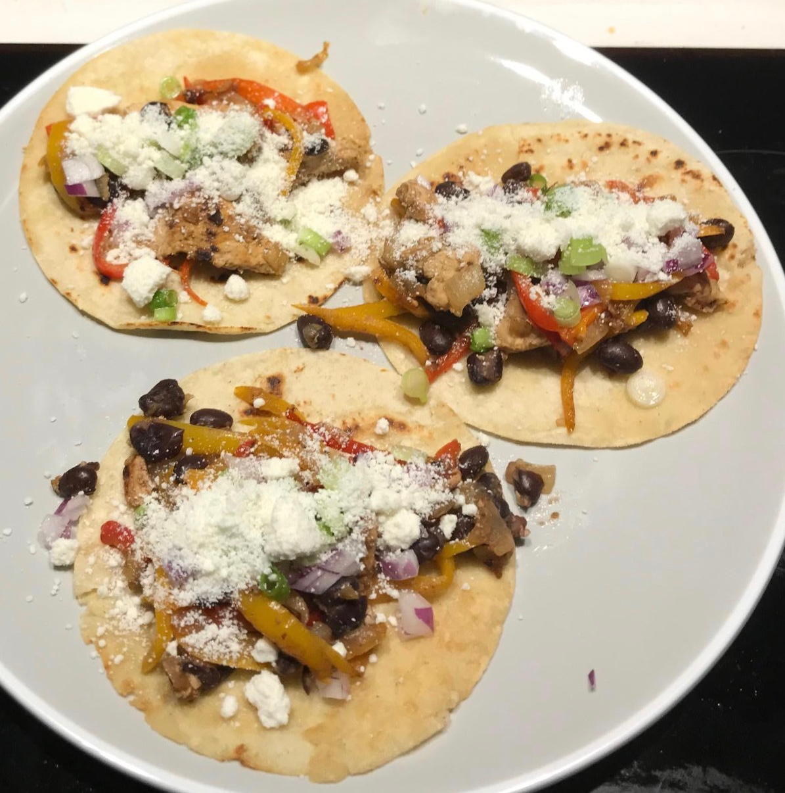
Ingredients
- chicken, 1 lb
- sweet or bell peppers, 1.5 cups chopped
- white onion, 1 whole
- black beans, 1 can (optional)
- corn tortillas, 9
- fajita seasoning
- olive oil, 2 tbsp
- butter, 2 tbsp
- Toppings to taste
- green onion or chives, 1 bundle
- red onion, 1/2
- cotija cheese
- lime wedges or juice
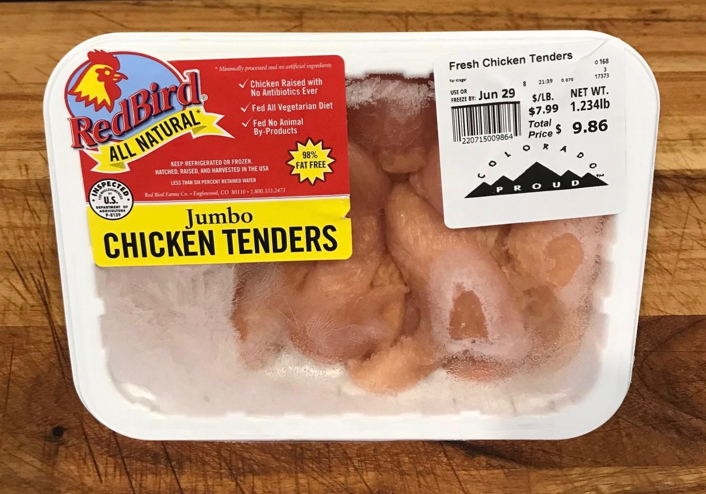
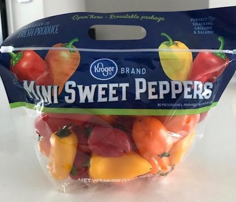
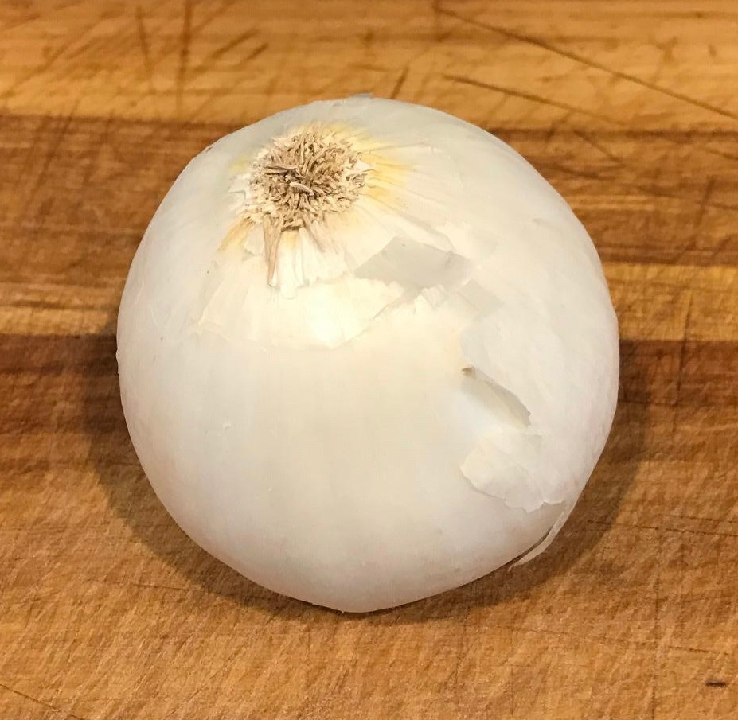
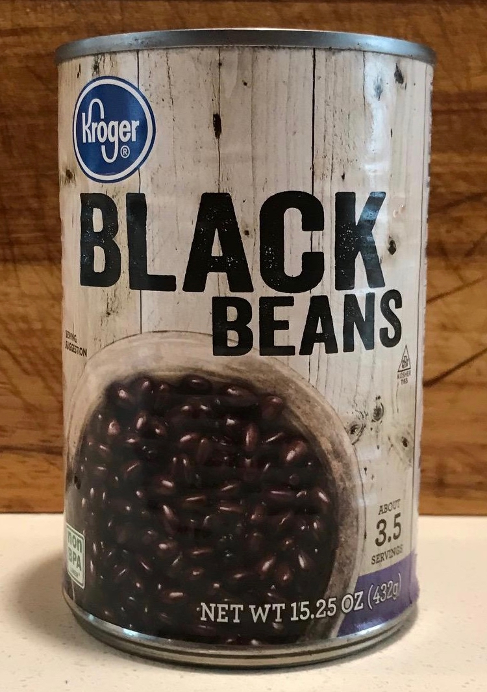
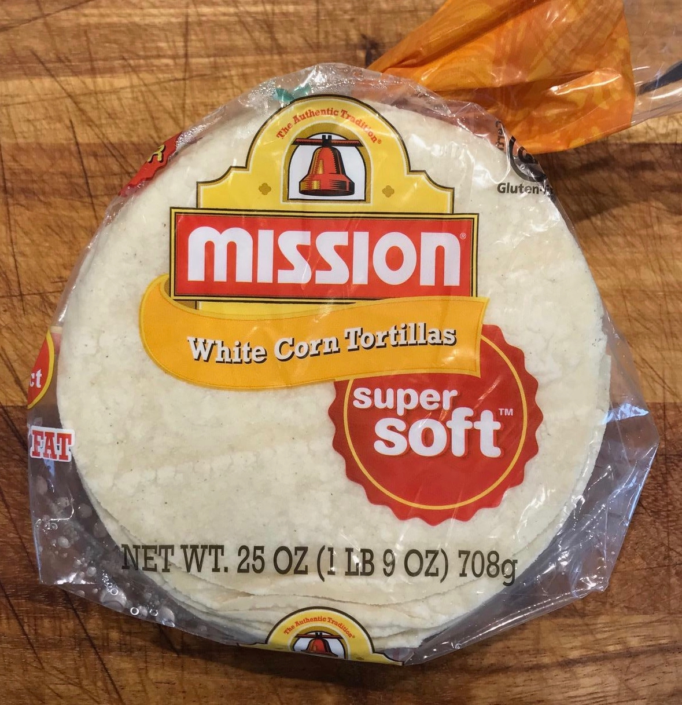
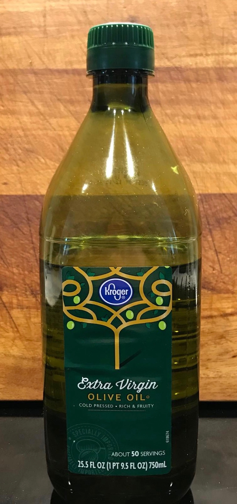
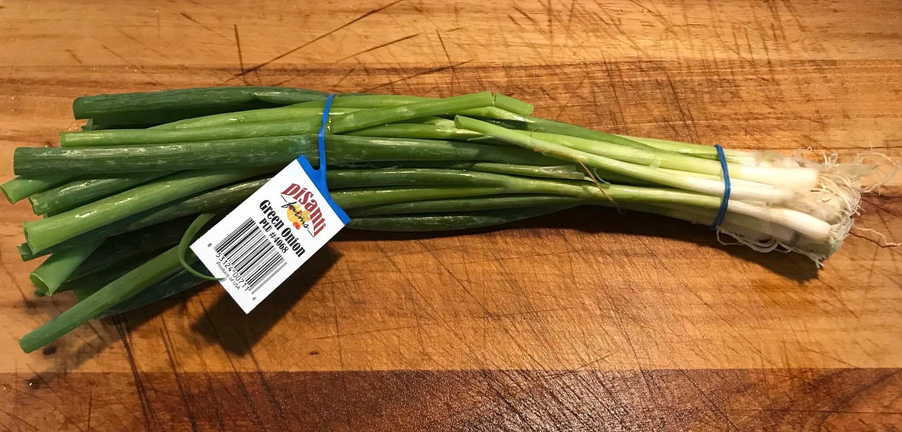
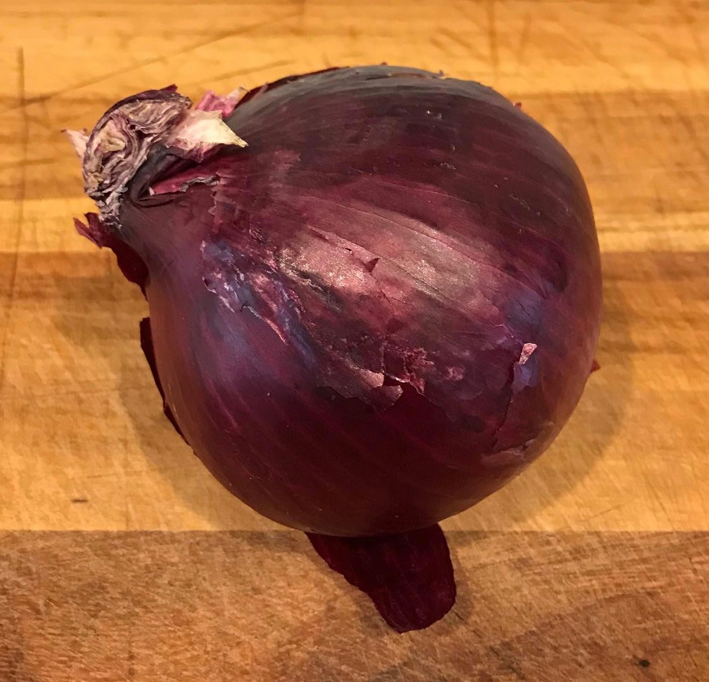
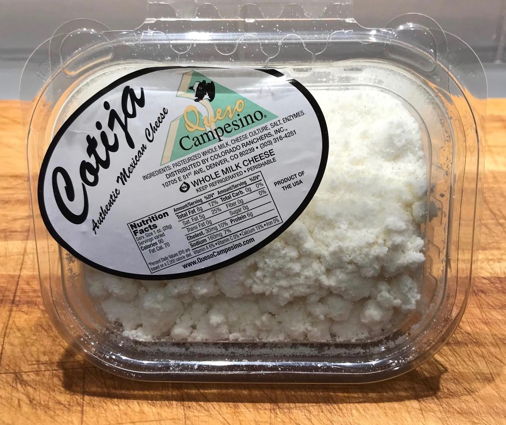
Kitchen Gear
- cast iron skillet
- large pan
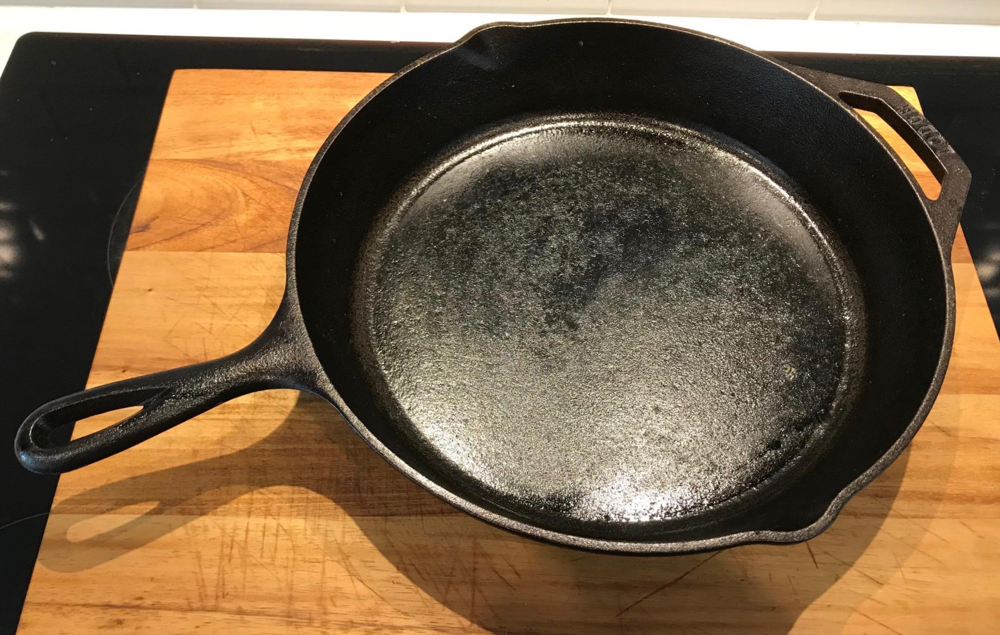
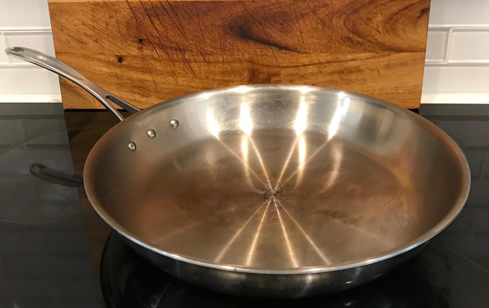
Commentary
- Cook tortillas while preparing fajitas and keep warm in foil and/or in oven at 170 degrees F
Marinate Chicken
- Cut chicken into cubes or strips of desired size
- To bowl or zip lock bag add
- Cubed chicken
- Fajita seasoning
- Olive oil
- Marinate at least 1 hour refrigerated before cooking
Cook Fajitas
- Roughly chop white onion and set aside
- Slice peppers length wise and open to remove seeds and pith (veins)
- Slice peppers into long strips
- Add 1 tbsp butter to skillet and bring to medium heat
- Add onions to hot skillet and cook until translucent
- Add peppers to skillet and cook until tender and charred
- Remove onion and peppers from skillet and set aside in bowl
- Bring skillet to medium-high heat, drain and add chicken
- Cook chicken until browned or slightly charred (about 10 min)
- Return onion and peppers to skillet
- (optional) Add black beans
- Mix well and cook to taste
Cook Tortillas
- Bring pan to medium-high heat
- Rub butter over hot pan and lay tortillas in pan
- When tortillas brown on bottom, rub butter on top and flip
- Remove from heat when brown to taste on both sides
- Repeat until all tortillas cooked
Combine and Serve
- Finely dice red and green onion
- Add fajita mixture on top of tortillas
- Sprinkle red onion, green onion, lime juice, and cotija cheese to taste
- Enjoy!